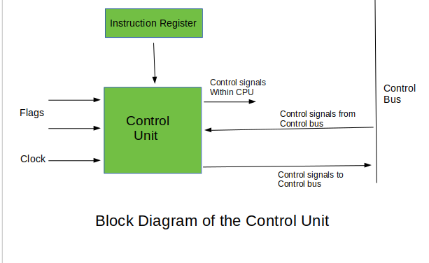

The control unit is one of the three major parts in the CPU. If one were to describe the CPU as the brain of the computer, the control unit would be the brain of the brain, as it controls everything the CPU interacts with. Its purpose is to direct the operations of the CPU by making sure it is performing the right operations at the right time. In this section we will see who interacts with the control unit as well as how the interactions happen and how the work of the control unit is done.
The control unit is a part of the CPU that is able to interface with outer components. These outer components include the ALU and memory, the clock, and any other input and output devices which may want to communicate with the CPU. The control unit is notable for not actually executing instructions itself, but for directing the other components of the CPU to execute them.
The control unit is responsible for a few things during the instruction cycle. Its first responsibility is to "fetch" the instruction from the computer’s memory. An instruction is any code that tells the cpu to perform any task, the most commonly used include loading numbers from another location in memory, performing addition on two numbers, jumping to another location in memory, etc. At this point, the control unit looks in the memory for the instruction, and reads the instruction. The next responsibility of the control unit is to “decode” the instruction. During this phase, the control unit looks at the bit string that is the instruction and figures out what specific instruction it is (from the opcode), and based on that, any other values associated with that instruction in the bit string, e.g. register numbers for arithmetic operations, memory addresses for memory-related operations such as reading and writing from memory, etc. The final responsibility of the control unit is to allow the memory to send the instruction output to any input or output devices.
Even though there are a lot of actions a control unit can perform, there are only a few ways a control unit can be implemented. The two best known types of control units are hardware control and microprogram control units. An easy way to remember the two is to think that one does the work using hardware and the other does the work using software. There are many differences between the two of them each having their own pros and cons. This leads to trade-offs that must be taken into consideration when deciding what control unit architecture will be implemented.
Hardware control units are completely implemented at the hardware level and thus do not allow for changes after the fact without rearranging hardware components. Hardware control units generate control signals using combinational logic circuits, leading to rapid execution of instructions compared to the microprogram control implementation. However, because logic gates are used to implement the logical circuit, the cost of manufacturing the control unit makes hardware control units the pricier option. Another downside of using logical circuits is that complex instructions cannot be practically implemented without also making the circuit complex. This is why this type of control unit shows the ideality of reduced instruction set computers or RISC.
On the other hand, microprogram controllers generate signals using micro instructions that are stored in the control memory. Because the instructions are in software, the modification of them is very simple compared to the hardware control unit. The usage of software also permits the usage of more complex instructions without having to increase the complexity of the architecture like it is done for the hardware implementation. The complex instruction set computers (CISC) is shown to be the ideology behind the implementation of control units in the microprogram way.
The control unit reads in instructions from memory. These instructions usually are some form of calculation, such as comparison or, in which the control unit would send directions to the ALU, or Arithmetic Logic Unit, in which are tiny circuits made from connected AND/OR/NOT gates. The control unit would then rewire the incoming data from memory into the ALU, causing it to perform the calculation, then outputting the result back to the control unit. The control unit either allocate space and store the result in RAM, or send the result directly to the source that needs it (unusual in modern time, but was a thing in earlier computers which had no need to store data, and those that had no dedicated GPU).
